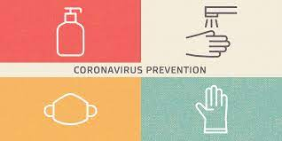

We can see that it is tough to get affected by the Covid-19 virus.
It has many symptoms which will make us feel bad. The most common
symptoms of Covid-19 are fever, tiredness, loss of taste and smell,
back pain, headache and many more. It also has long-term effects like
long-term breathing problems, heart complications, chronic kidney impairment,
stroke and Guillain-Barre syndrome that is why we need to help each other,
including ourselves. How can we do that? First is by following the health and
safety protocols like maintaining social distancing, wearing a mask, cleaning
your hands with water and soap, practicing cough etiquette. Second is to get
vaccinated. We can always be sure that we won’t get severe cases when we’re
vaccinated. In this way, we can also make other people that are around us be
safe.